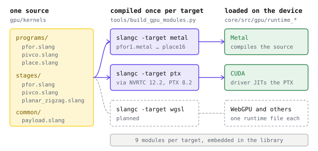

One kernel source in Slang
- Slang
2026.19 - Sources in
gpu/kernels - Built by
tools/build_gpu_modules.py
Every GPU family speaks its own kernel language. NVIDIA drivers load PTX, Apple devices compile the Metal Shading Language, and WebGPU runs WGSL. Writing GeoZL's decoder once per family would mean every fix lands several times and the copies slowly drift apart.
GeoZL writes its kernels once, in Slang, and compiles them ahead of time for each backend. CUDA and Metal are the first two backends, and more are planned, WebGPU among them. The compiled kernels ship inside the library, so neither building GeoZL nor running it needs Slang.

What Slang is
Slang is an open-source shading language, developed at NVIDIA and now hosted by Khronos. Its syntax is close to HLSL, and a single compiler, slangc, emits code for many targets, including Metal source, CUDA through PTX, SPIR-V for Vulkan and WGSL for WebGPU.
What matters most for GeoZL is that Slang has portable wave operations. The decoder leans on four of them, a prefix sum, a sum, an OR and a read from another thread. Here is the inner step of the PivCo merge from gpu/kernels/stages/pivco.slang, with comments added.
uint ones = countbits(bits); // 1s in this thread's bitmap byte
uint onesBefore = carry + WavePrefixSum(ones); // 1s in the bytes before it
uint zerosBefore = p0 - onesBefore;
merge_byte(bits, p0, count, leftCount, onesBefore, zerosBefore,
outputBase, toLanes);
carry += WaveActiveSum(ones); // 1s in the whole stepOn Metal, WavePrefixSum becomes simd_prefix_exclusive_sum and WaveActiveSum becomes simd_sum. In the PTX the same lines turn into shfl.sync warp shuffles. The kernel code does not change between them.
How the kernels are organised
gpu/kernels holds three kinds of file. common/payload.slang sets the constants every kernel shares, a 32-thread wave, four waves per group and eight values per thread, and declares the compressed payload buffer with helpers that load 8, 32 or 128 bits from any byte offset.
stages/ holds the decoding steps. pfor.slang unpacks one 256-value block in one wave, pivco.slang merges a Huffman tree from the leaves up, and planar_zigzag.slang undoes Zigzag and runs the inverse planar scans, one pass for narrow planes and a row pass and a column pass for wide ones.
programs/ holds the three programs the library loads. Each one includes the payload helpers first, so the payload stays at binding 0, then declares its task buffers and its entry points.
| pfor | unpack_blocks, the three planar scans, copy_raw |
|---|---|
| pivco | decode_symbols, unpack_lane_blocks, join_lanes, the three planar scans, copy_raw |
| place | place, which copies decoded rectangles into the caller's target |
A program is compiled once per sample width. The macro ELT_BYTES picks the element type, so pfor and pivco come in widths 1 and 2 and place in 1, 2, 4, 8 and 16 bytes. That gives nine modules per target, named after program and width, such as pfor2 or place16.
Compiling a module for each target
tools/build_gpu_modules.py builds every module of one target into a directory, normally core/src/gpu/modules.
python3 tools/build_gpu_modules.py /path/to/slangc metal core/src/gpu/modules
python3 tools/build_gpu_modules.py /path/to/slangc ptx core/src/gpu/modulesIt first checks that slangc reports version 2026.19 and stops otherwise, because a different compiler would produce different modules. For each program and width it then runs slangc with every entry point of the program, -target metal or -target ptx, -D ELT_BYTES set to the width, and -line-directive-mode none so no file paths end up in the output.
Each compile also writes Slang's reflection JSON, and tools/check_slang_layout.py compares the buffer order it reports with the order the host binds. The host passes buffers by index, so a reordered declaration in a program would silently swap two of them at run time. The check turns that into a build failure.
Metal source builds anywhere slangc runs, a Linux machine included. PTX also needs NVRTC, the CUDA runtime compiler that slangc calls to turn its CUDA output into PTX.
PTX and the oldest driver
PTX is not machine code. The CUDA driver compiles it for the GPU it finds when the module loads, which is why one PTX file covers every NVIDIA generation from its target up. The checked-in modules target sm_70.
A driver only accepts PTX up to its own PTX version, and each NVRTC release writes a newer one. PTX from NVRTC 12.8 carries .version 8.7, and a 550 driver, which reads up to 8.4, rejects it. The rule is to build PTX with an NVRTC no newer than the oldest driver GeoZL should run on.
The checked-in PTX comes from NVRTC 12.2 and carries .version 8.2, so drivers from the CUDA 12.2 generation on can load it. When a driver refuses a module anyway, the error GeoZL returns carries the first line of the driver's JIT log, which names the PTX feature it rejected.
Keeping the modules in step with the source
The compiled modules are checked in, so a kernel change that is not rebuilt would ship old code. Each build writes core/src/gpu/modules/sources.sha256 to catch that.
For every target the manifest records one digest of the compiler inputs and one hash per module. The input digest covers the Slang version, the target, the table of programs, entry points and widths, the fixed flags and the path and bytes of every .slang file under gpu/kernels. Four of its lines, with the hashes shortened, look like this.
metal:pfor2.metal ccafb79e…
metal:sources 222818d7…
ptx:pfor2.ptx 6b6062d3…
ptx:sources 1c6f4e28…build_gpu_modules.py --check recomputes both and fails when the sources changed without a rebuild or when a module no longer matches its hash. It needs no Slang and no GPU, so CI runs it on every change. A kernel edit then comes with rebuilt Metal and PTX, or CI says which target is stale.
Loading the embedded modules
At build time CMake picks the module kind for the platform, Metal source on Apple and PTX on Linux. core/src/gpu/embed_modules.cmake turns every module of that kind into a C byte array and writes a table of name, bytes and size, declared in core/src/gpu/modules.h. A build without GPU support compiles a stub instead, whose calls report that GPU support is not built in.
At run time the decoder looks a module up by program and width the first time a batch needs it, pfor2 for a two-byte PFOR frame, and hands the bytes to the backend.
- The Metal runtime compiles the source with
newLibraryWithSource, builds a pipeline per entry point and rejects any pipeline whose SIMD-group width is not 32. - The CUDA runtime opens
libcuda.so.1withdlopen, so the library loads on machines without CUDA, and passes the PTX tocuModuleLoadDataEx, where the driver compiles it for the device.
On CUDA, a program keeps its buffer pointers in module globals, so one program runs one batch at a time. Callers that need concurrent work create one decoder per stream.
Creating a decoder loads or compiles the kernels for its device, so create one decoder and reuse it.
Adding a backend
The host API, capture, planning, task lists and staging are shared by every backend. core/src/gpu/runtime.c validates each call and forwards it through a small table of operations, GeozlGpuBackendOps, that opens a device, allocates and frees memory and staging, queues a batch of kernels and waits for it.
A new GPU family, WebGPU, Vulkan or HIP, needs three things. One runtime file implements that table and compiles in under its own define, as runtime_metal.m and runtime_cuda.c do. A backend id selects it. And build_gpu_modules.py gains the Slang target, with the module kind added to the CMake build so the outputs are embedded.
The kernels assume a 32-wide wave. A backend whose devices can run another width, as some WebGPU and Vulkan devices do, must ask for 32 or reject the device, as the Metal runtime does today. The formats, the kernels and every caller stay as they are.